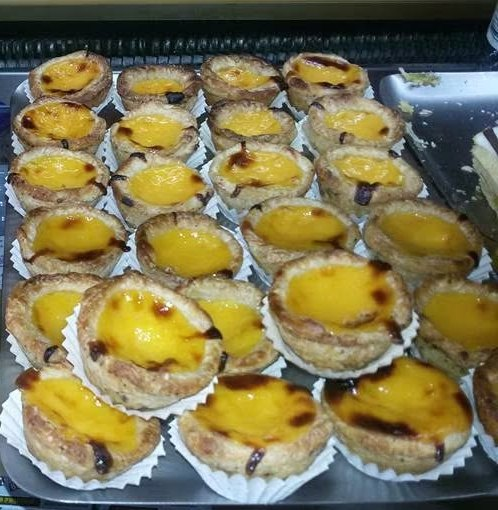
🔥 Esgotam cedo!A estrela da casa
Pastéis de Nata
Massa estaladiça, creme aveludado e aquele toque de canela. São tão procurados que na maioria dos dias esgotam cedo — venha de manhã ou ligue a reservar.
Reservar por telefone →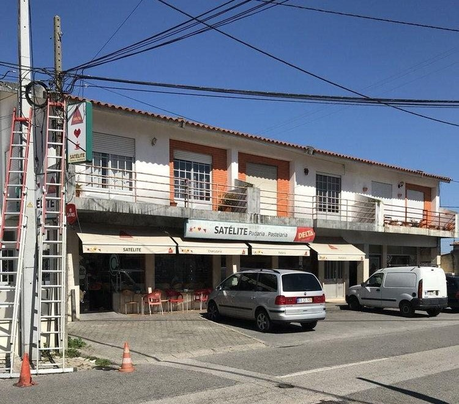
Uma padaria e pastelaria de família onde o café é sempre fresco, a broa é caseira e cada cliente é recebido com um sorriso. Aberto todos os dias das 06:00 às 21:00.
06:00
Pão quente todas as manhãs
7 dias
Abertos de segunda a domingo
4,3★
239 avaliações no Google
96%
Recomendam no Facebook
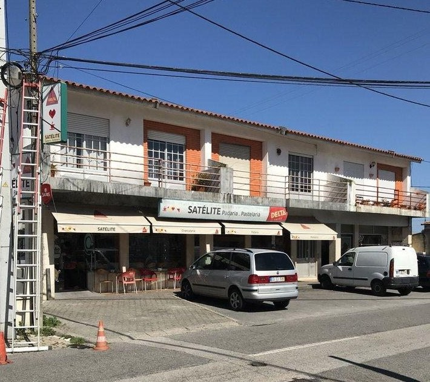
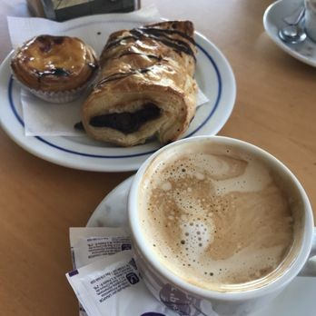
A Nossa Casa
Na Satélite, o dia começa antes de o sol nascer. Às 6h já há pão a sair do forno, café acabado de tirar e a montra cheia de pastéis de nata ainda mornos.
Somos uma casa de família, e é assim que tratamos quem entra pela porta: pelo nome, com um sorriso e com a meia de leite tal e qual como gosta. Vizinhos da Gafanha da Encarnação, da Gafanha da Nazaré, de Ílhavo e quem vem a caminho da Costa Nova — aqui sentem-se em casa.
As Nossas Especialidades
Pão, bolos e petiscos feitos com tempo e com carinho — como sempre se fez cá na terra.

🔥 Esgotam cedo!A estrela da casa
Massa estaladiça, creme aveludado e aquele toque de canela. São tão procurados que na maioria dos dias esgotam cedo — venha de manhã ou ligue a reservar.
Reservar por telefone →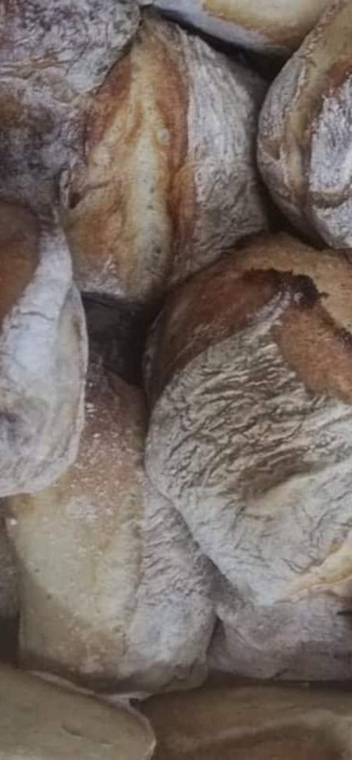
Padaria Tradicional
Fornadas a partir das 6h da manhã, para o pequeno-almoço chegar a casa ainda quentinho.
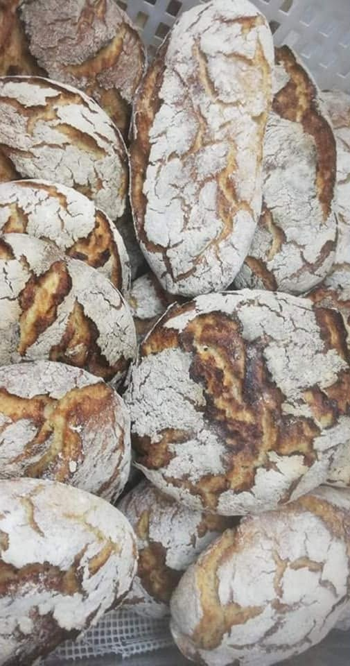
Padaria Tradicional
Caseiras, de côdea rija e miolo húmido. A de chouriço é a preferida de muitos clientes — e percebe-se porquê.

Pastelaria
Simples, com chocolate ou recheados com fiambre e queijo. O par perfeito para a meia de leite.
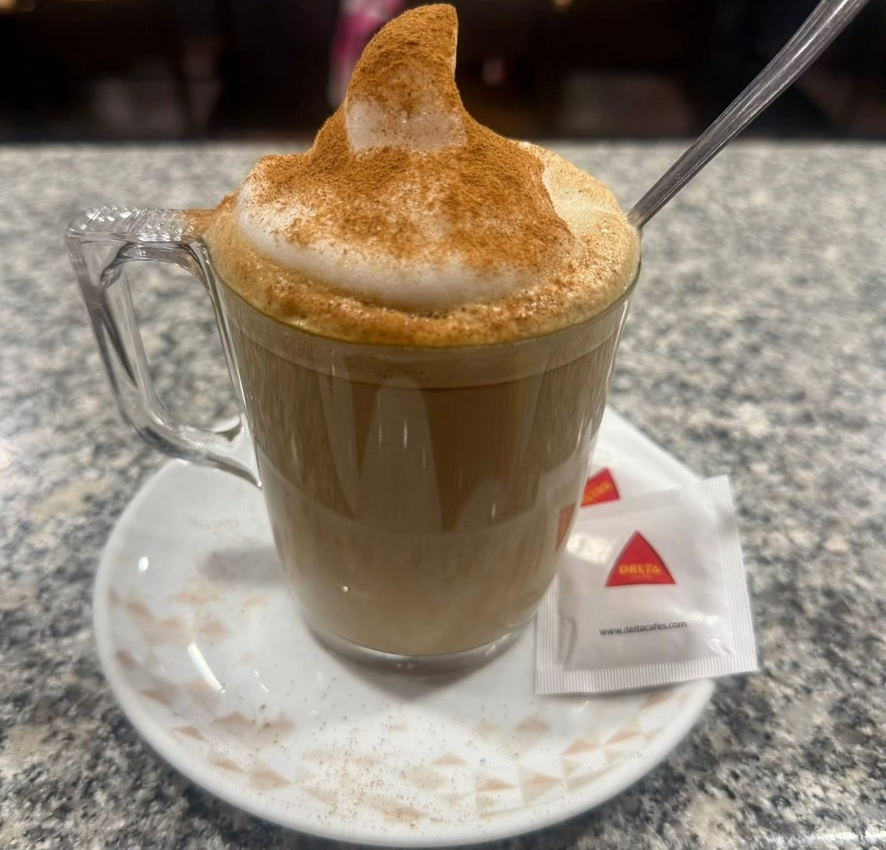
Cafetaria
Café Delta sempre fresco, tirado na hora — da bica ao galão com espuma e canela. Os nossos clientes dizem que é "o melhor das manhãs" — quem somos nós para discordar?
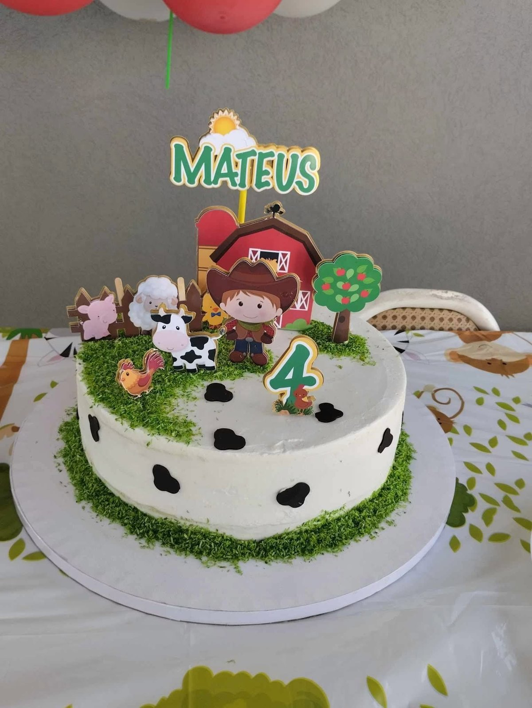
Por encomenda
Personalizados com o nome e o tema preferido — como este bolo da quinta, com a vaquinha, o celeiro e os animais.
Encomendar: 234 366 423 →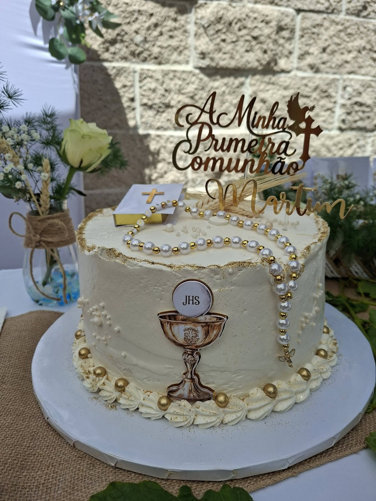
Por encomenda
Bolos para os dias que ficam na memória: Primeira Comunhão, batizados e outras celebrações, decorados a preceito.
Encomendar: 234 366 423 →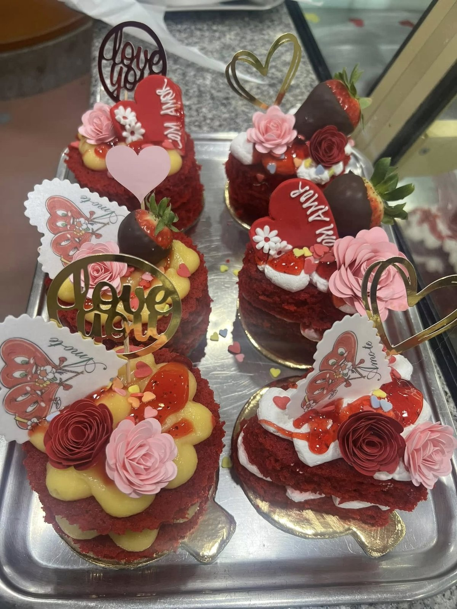
Datas especiais
Para os dias mais doces do ano — como estes mini bolos red velvet que preparámos para o Dia dos Namorados.
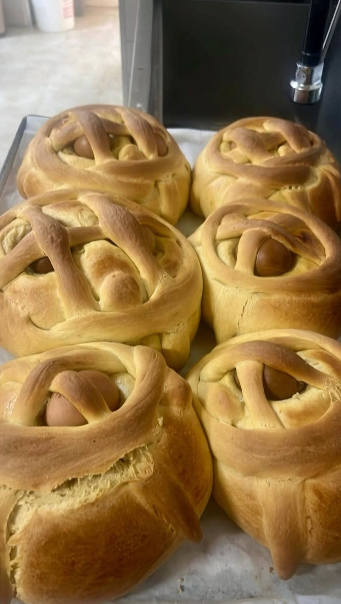
Época da Páscoa
Massa doce entrançada à mão, com o ovo lá dentro, como manda a tradição.
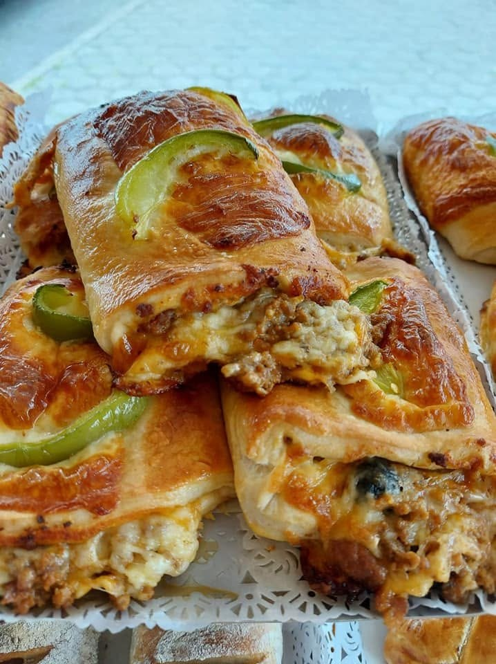
Salgados da Casa
Recheado com carne e queijo gratinado, com pimento por cima. Ótimo para um lanche reforçado.
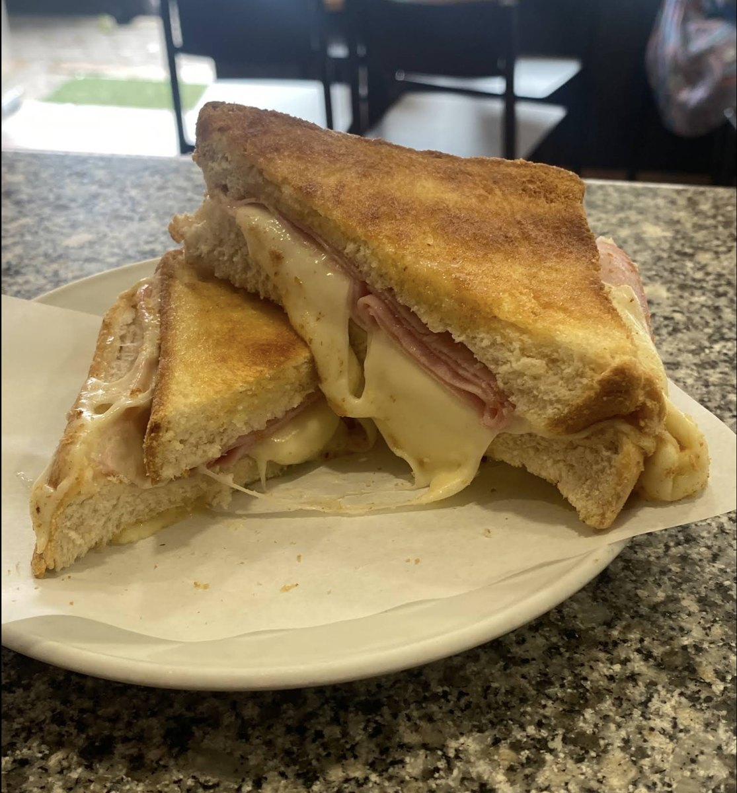
Refeições Rápidas
A tosta mista bem tostadinha, com o queijo a derreter, e sandes no nosso pão do dia para comer cá ou levar.

Refeições Rápidas
Feitos na hora, suculentos e bem servidos. Uma refeição rápida que sabe a comida de verdade.
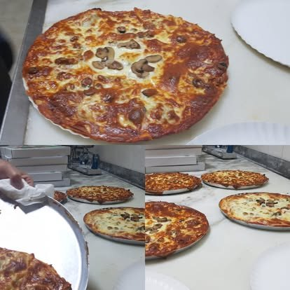
Refeições Rápidas
Massa estendida cá em casa e ao forno na hora. Para comer na esplanada ou levar para o jantar em família.
O Que Dizem de Nós
4,3★
Google · 239 avaliações
96%
Recomendam no Facebook
"Melhor pastelaria/padaria da Gafanha da Encarnação. Ótima equipa! O melhor das minhas manhãs!"
"O café e o Pastel de Nata são fantásticos, tão bons que costumam esgotar cedo na maioria dos dias."
"Adoro tudo! Desde a gerência aos funcionários são todos 5 estrelas. Pastéis sempre fresquinhos, pão delicioso, para não falar na broa de milho e de chouriço."
"Sem dúvida a melhor pastelaria da Gafanha da Encarnação com o melhor atendimento tanto por parte das funcionárias como dos patrões."
Onde Estamos & Horário
Todos os dias: 06h00 – 21h00
Segunda a Domingo, incluindo fins de semana.
A poucos minutos da Gafanha da Nazaré, do centro de Ílhavo e da Costa Nova.
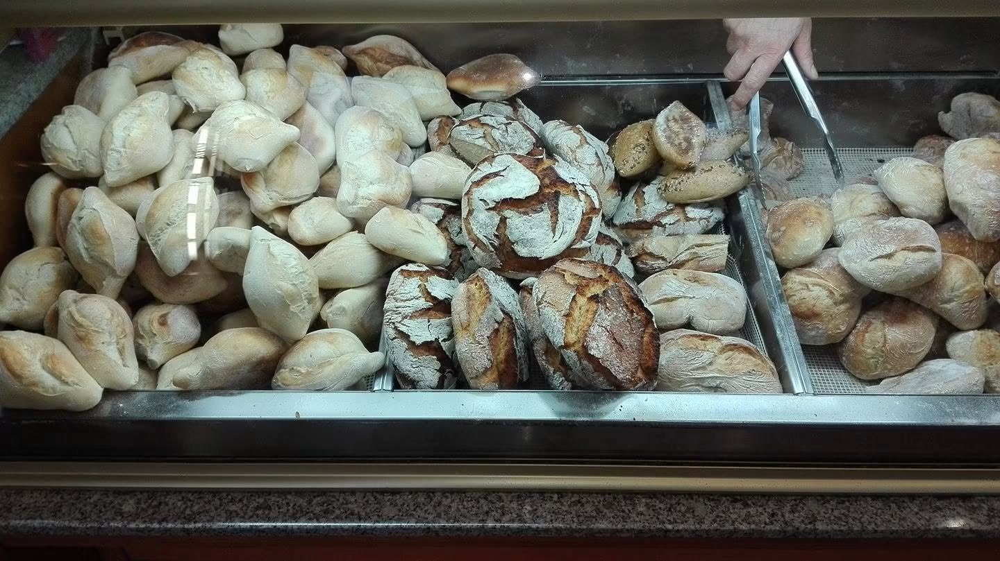
Para encomendas de bolos, broas ou para guardar uns pastéis, basta ligar. Nós tratamos do resto.
📞 234 366 423